安心药箱 V1.0 产品需求文档
负责人：郑思涵 · 更新：2026-10-26 · 状态：评审中 · 原型图取自 Figma 高保真原型 v3，可交互 Demo 与原型一致
1. 需求背景
1.1 业务背景与数据现状
| 维度 | 数据 | 来源 |
|---|---|---|
| 老年人口 | 2024 年末 60 岁及以上 31031 万人，占总人口 22.0% | 2024 年度国家老龄事业发展公报 |
| 慢病 | 约 1.9 亿老年人患有慢性病 | 中国政府网 ·"十四五"老龄规划解读 |
| 多重用药 | 老年患者同时使用 5 种以上药物约 48% | Frontiers in Pharmacology, 2022 |
| 空巢 | 空巢老年人占比超过一半，部分地区超过 70% | 民政部发布会 · 中新网 |
异地子女现在确认父母吃药，主要靠每天打电话：父母会忘，也会记不清吃没吃而补吃成两次；电话里说不清是哪一盒、哪一格；子女天天打电话难以坚持。
1.2 内外部情况
内部现状
- 已上线人工模拟版 MVP：手机闹钟提醒，父母打开专属链接确认，确认结果短信发给子女，超时由子女人工打电话。
- 已完成可交互 Demo（双端）、Figma 高保真原型 v3（21 屏 + 2 张规范板）、医嘱整理评测集 v2（120 条，含 holdout）与数据分析报告、拍照核对评测集（158 张仿真药盒图，14 类情况）与评测报告、45 项自动测试。
外部竞品
| 竞品 | 形态与价格 | 可借鉴 | 不足 |
|---|---|---|---|
| Medisafe | 吃药提醒 App；Premium 每月 4.99 美元，2026 年起美国以外全面付费（帮助中心） | 补药提醒、漏服通知家属、服药历史 | 漏服只通知家属一次，没有逐级升级；为"自己管自己吃药"设计 |
| MyTherapy | 免费吃药提醒 App，支持中文（App Store） | 一键确认、补药提醒、健康日记 | 没有漏服通知家属 |
| 苹果健康「用药」 | iPhone 系统自带 | 扫药盒标签录入、药物相互作用提醒 | 没有家属通知和补药提醒 |
| 国内联网药盒 | 报道中一款 3900 元（京报网） | 记录上云、通知子女 | 贵；老人反映功能过于复杂 |
3 款头部 App 合计 14 项功能，安心药箱具备 10 项；补药提醒为本期借鉴新增。详见竞品与商业模式。
2. 需求概述
| 用什么方式 | 一款吃药提醒 App，父母端像来电一样提醒并朗读吃药指引，子女端实时看到确认结果；配合家里已有的普通分格药盒使用。提醒、升级、状态由规则决定。大模型负责两件事：把医嘱整理成用药方案并标出原文依据；父母吃药前拍一下药盒，读出盒上的药名和规格，由规则判断拿没拿对。 |
|---|---|
| 解决什么问题 | 父母忘吃、记不清吃没吃导致漏服或重复服药；子女只能靠每天打电话确认，累且不可持续。 |
| 达到什么目标 | 试用 2 周内：子女每周只为确认吃药打的电话下降一半；父母本人确认率 ≥ 80%；误报率 < 20%；重复服药 0 次；医嘱整理编造率 ≤ 2%；拍照核对把错药说成「对了」0 次。目标值均为假设，待试用校准。 |
3. 功能清单
3.1 全局图
新增修改沿用以 V0.2 原型为基线；本期无删减功能。
flowchart LR A[安心药箱 V1.0] --> P[父母端] A --> C[子女端] A --> S[服务端] P --> P1[来电式提醒]:::keep P --> P2[吃药指引与朗读]:::keep P --> P3[确认与二次确认]:::keep P --> P4[求助与防重复服药]:::keep P --> P5[手机追问确认]:::mod P --> P6[拍一拍核对]:::new C --> C1[今日状态与一周情况]:::mod C --> C2[消息与异常处理]:::keep C --> C3[AI 整理医嘱]:::new C --> C4[补药提醒]:::new C --> C5[提醒设置]:::keep C --> C6[拿错药提醒与核对记录]:::new S --> S1[提醒调度与逐级升级]:::keep S --> S2[服药状态体系]:::mod S --> S3[大模型中转与原文核对]:::new S --> S4[看图模型中转与核对规则]:::new classDef new fill:#dcf0e2,stroke:#216543 classDef mod fill:#fff0d4,stroke:#825814 classDef keep fill:#eef2ef,stroke:#9baaa2
3.2 功能列表
| 模块 | 功能 | 优先级 | 变更 | 版本 |
|---|---|---|---|---|
| 父母端 | 来电式提醒：到点响铃 + 语音，15 分钟第 2 次响铃 | P0 | 沿用 | V1.0 |
| 吃药指引：格子、外观、片数、吃法，多种药按饭前 → 随餐 → 饭后 → 睡前排序朗读 | P0 | 沿用 | V1.0 | |
| 确认：我吃好了 + 语音二次确认 | P0 | 沿用 | V1.0 | |
| 求助：4 个带序号的选项；记不清吃没吃时提示先别再吃 | P0 | 沿用 | V1.0 | |
| 手机追问：看完指引 10 分钟未确认，手机主动问"吃好了吗"，可说话确认 | P1 | 修改 | V1.1 | |
| 现在不方便吃：还没开饭 20 分钟后、不在家 30 分钟 / 1 小时 / 2 小时后再提醒，不算没确认 | P1 | 沿用 | V1.1 | |
| 拍一拍核对：吃前拍药盒，答对了 / 也是这一顿的 / 不对 / 不在清单 / 看不清；拿不准绝不说对了 | P1 | 新增 | V1.0 | |
| 子女端 | 今日状态、最近 7 天记录、这一周的规律与建议 | P0 | 修改：周分析改为规则统计 | V1.0 |
| 异常处理：打电话、发短信、记为电话确认、15 分钟后再响铃 | P0 | 沿用 | V1.0 | |
| AI 整理医嘱：文字或语音输入，大模型整理 + 原文核对，保存前子女核对 | P0 | 新增 | V1.0 | |
| 补药提醒：按确认扣减药量，推算够吃天数，低于设定天数提醒 | P0 | 新增 | V1.0 | |
| 拿错药提醒与核对记录：拍照发现拿错或清单外的药时推送；每一顿记下核对结果；登记药品时拍药盒预填药盒名和规格 | P1 | 新增 | V1.0 | |
| 首次授权：绑定父母手机 → 邀请家人 → 父母本人同意 | P0 | 沿用 | V1.0 | |
| 多家人顺序升级、每晚汇总、夜间免打扰 | P1 | 沿用 | V1.1 | |
| 服务端 | 提醒调度与逐级升级规则 | P0 | 沿用 | V1.0 |
| 服药状态体系：6 种状态，写明确认来源 | P0 | 修改 | V1.0 | |
| 大模型中转：保管密钥、限制来源与长度、结果核对 | P0 | 新增 | V1.0 | |
| 看图模型中转：照片只用于这一次识别不保存；限制图片大小；修复已知的输出格式错误 | P1 | 新增 | V1.0 |
4. 需求详情
4.1 交互逻辑
状态机及对应交互图
每一顿药（某天某个时刻的一组药）是一个状态机。子女端只展示看到的事实，"还没确认"不等于"没吃"。
stateDiagram-v2 [*] --> 未到时间 未到时间 --> 已提醒: 到点响铃 已提醒 --> 已提醒: 15 分钟第 2 次响铃 已提醒 --> 待会再吃: 父母选"现在不方便吃" 待会再吃 --> 已提醒: 到了延后的时间 已提醒 --> 确认中: 父母点"我吃好了" 已提醒 --> 确认中: 看完指引 10 分钟手机追问 确认中 --> 已提醒: 选"还没有" 确认中 --> 自己确认: 选"都吃好了" 已提醒 --> 求助中: 父母求助 已提醒 --> 还没确认: 超过约定的 30/60 分钟 还没确认 --> 电话确认: 子女电话后记录 还没确认 --> 已提醒: 子女设 15 分钟后再响 求助中 --> 电话确认: 子女电话核对后记录 已提醒 --> 手机离线: 30 分钟联系不上父母手机 自己确认 --> [*] 电话确认 --> [*]
原型图均取自 Figma 高保真原型 v3；可交互 Demo 的界面与原型一致。
已提醒：来电式提醒 → 吃药指引
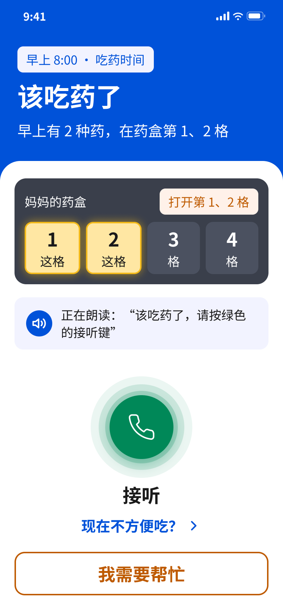
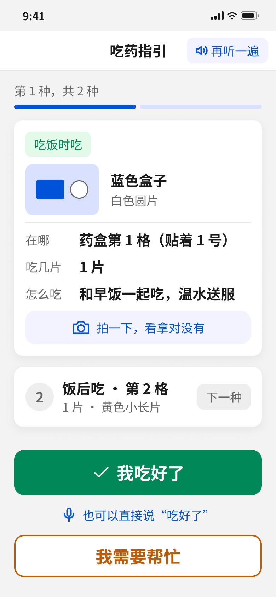
已提醒 · 拍一拍核对（只给提示，不改变状态）
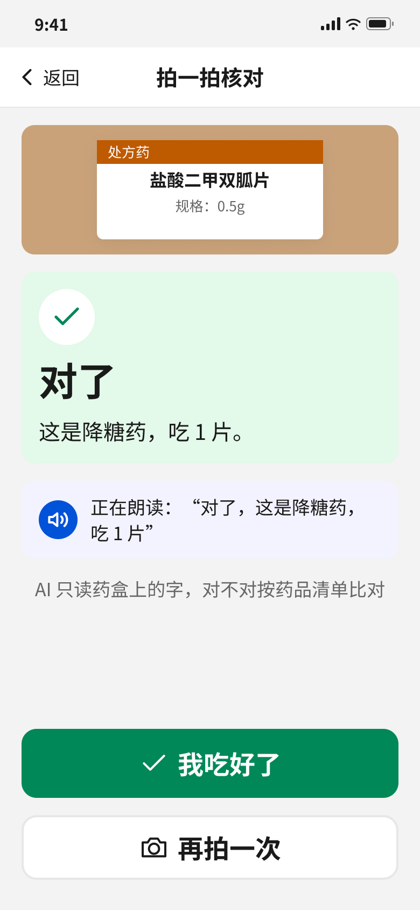
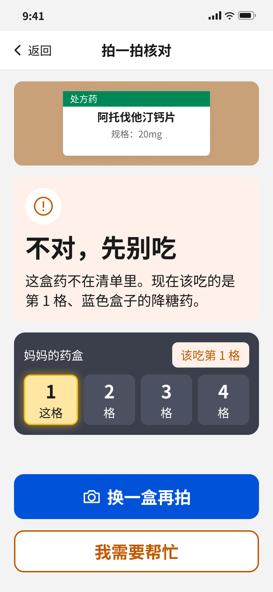
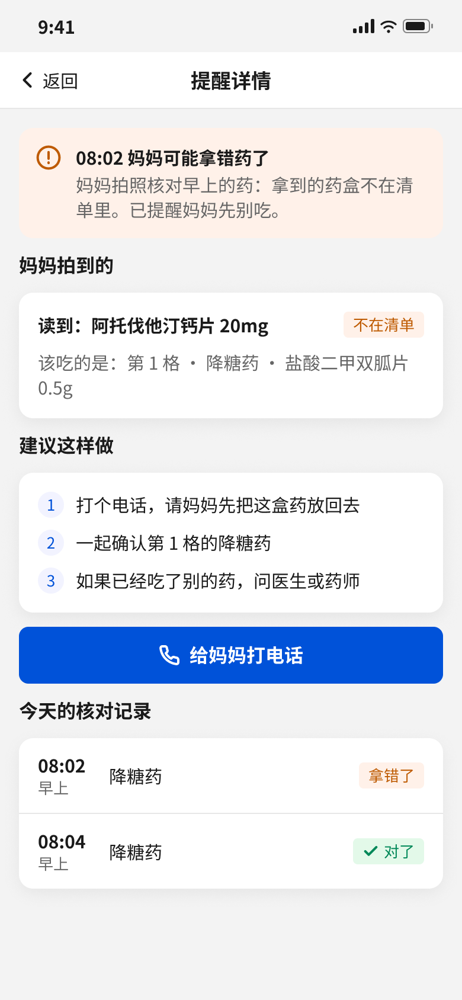
待会再吃
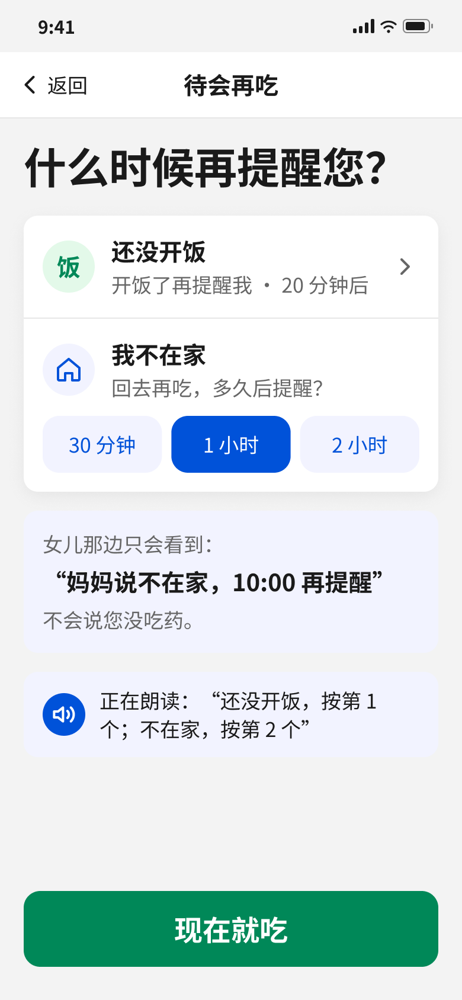
确认中 → 自己确认
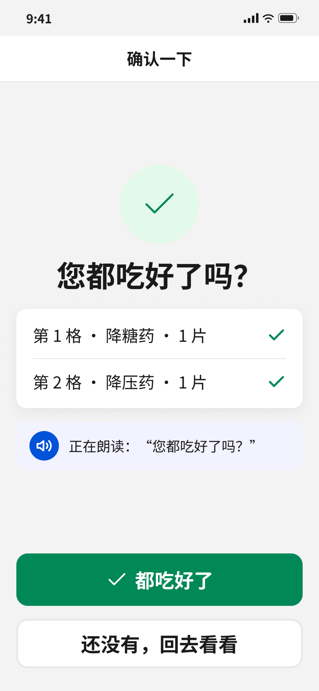
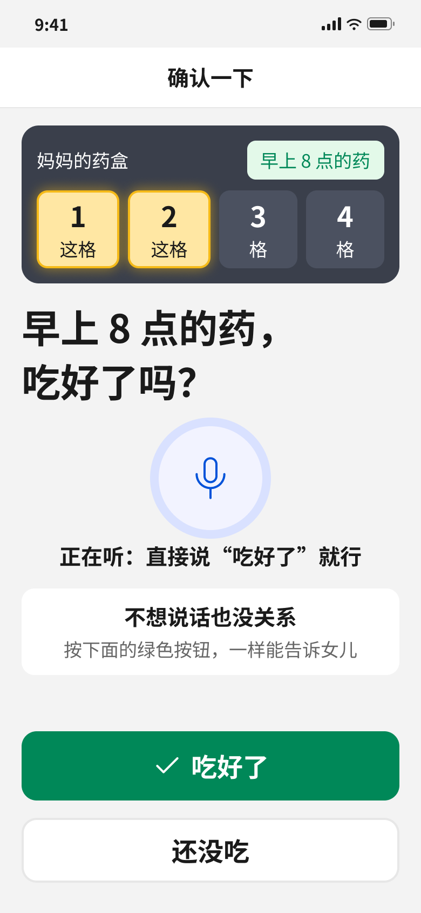
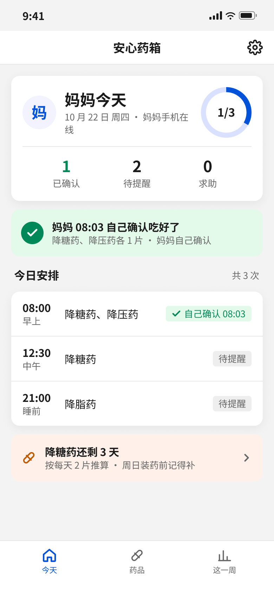
求助中
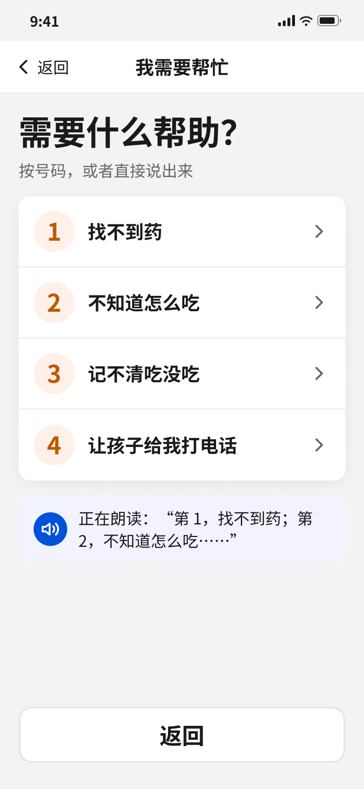
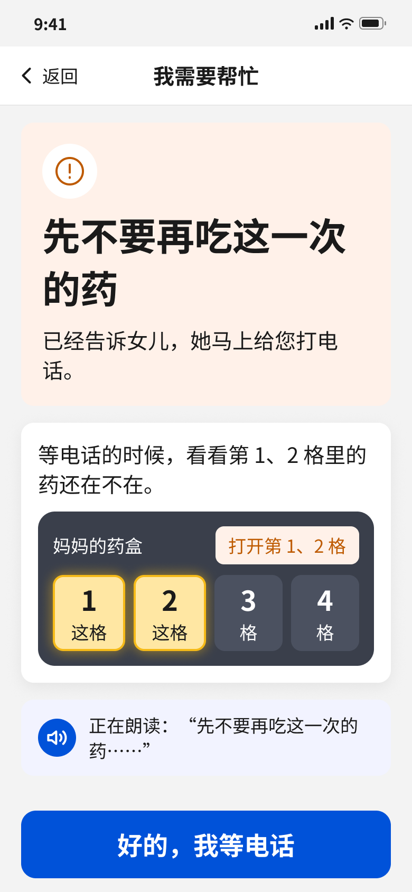
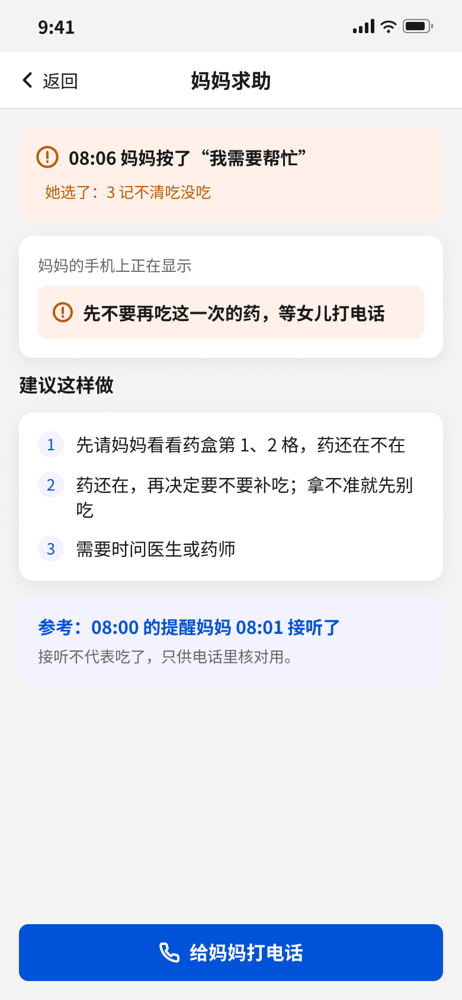
还没确认 → 电话确认
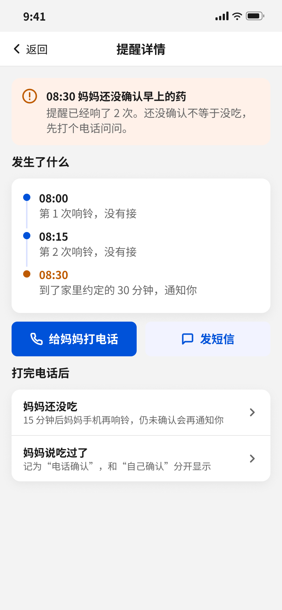
手机离线
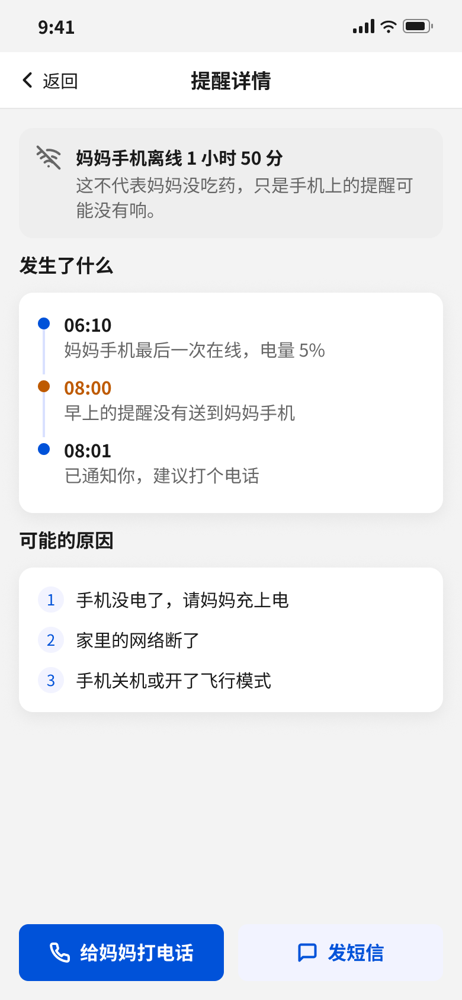
其他页面：录入、统计、设置、装药与首次使用
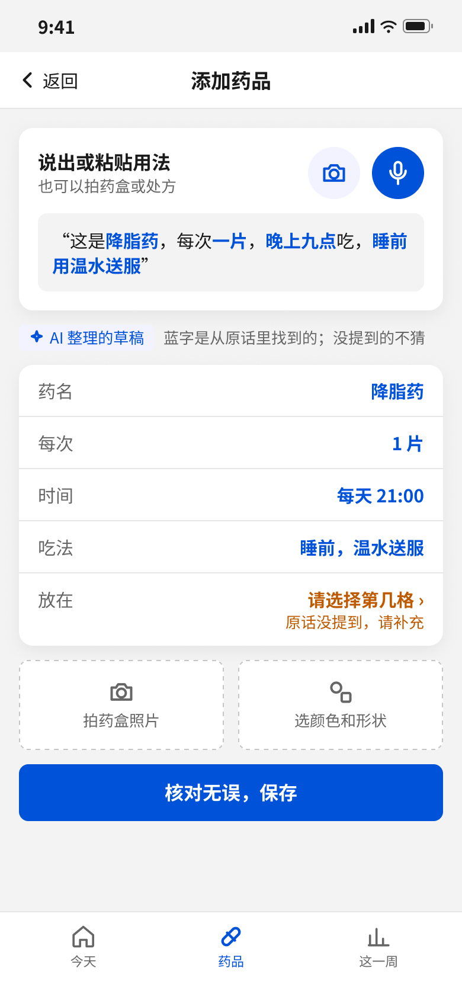
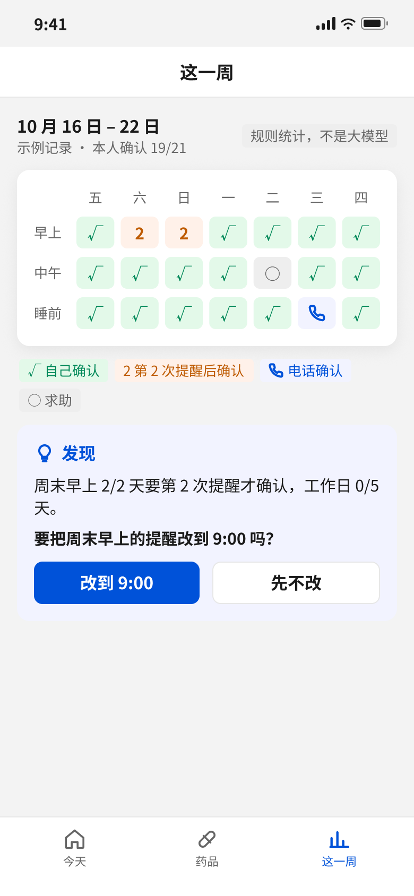
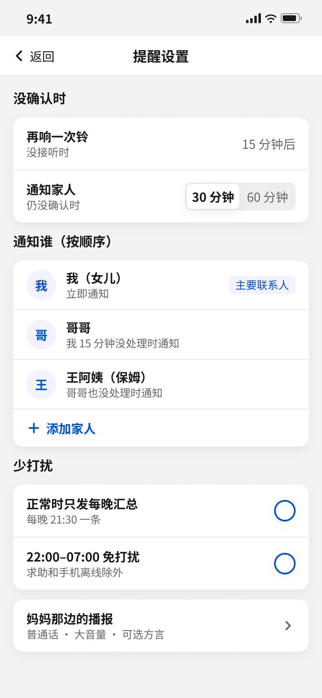
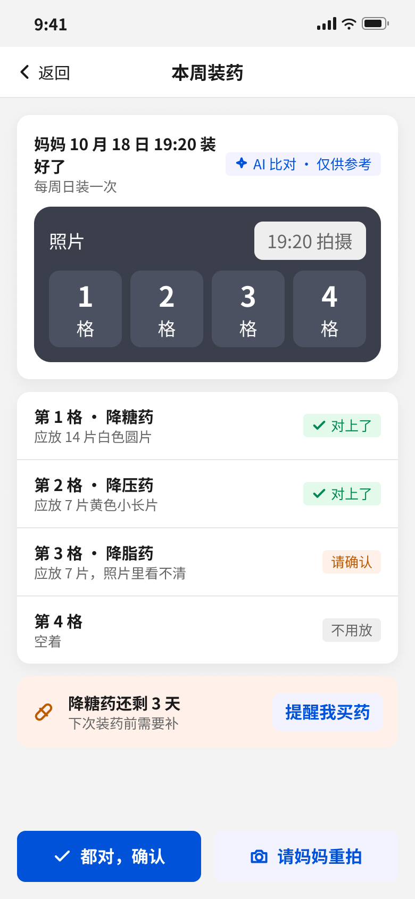
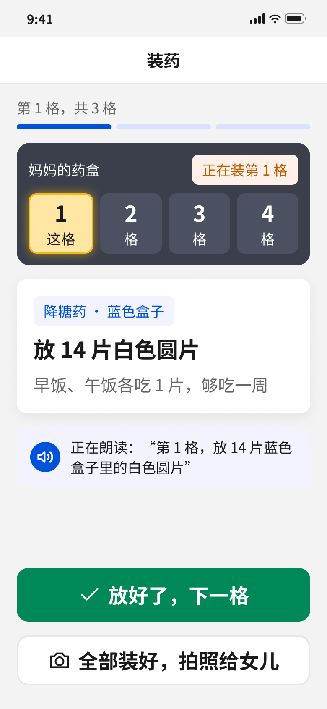
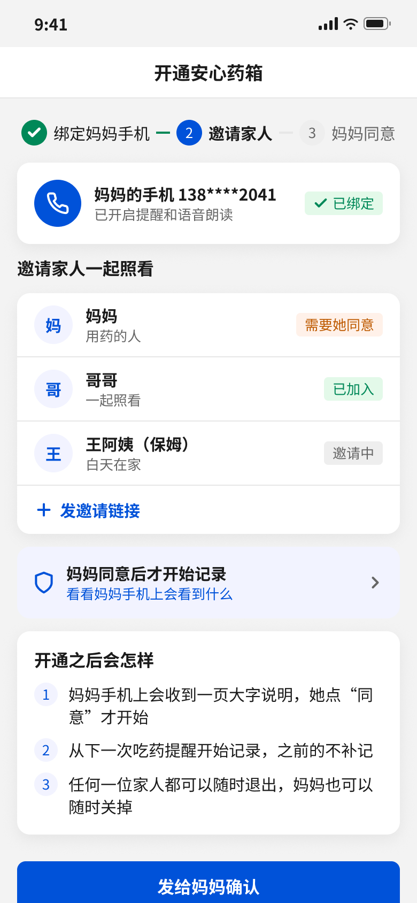
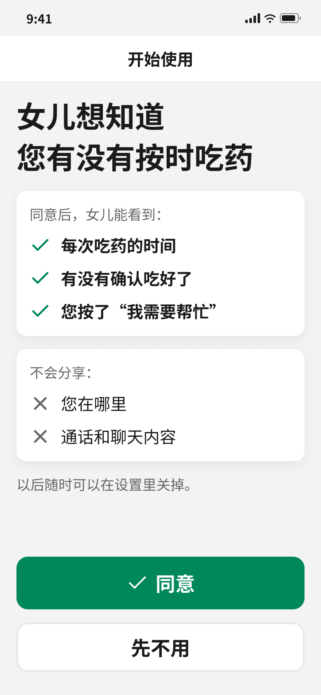
前后端交互逻辑：提醒、确认与通知
sequenceDiagram
participant S as 服务端调度
participant P as 父母端
participant C as 子女端
S->>P: 到点推送来电式提醒(dose_id, 时刻, 药品列表)
P->>S: 接听 / 稍后(dose_id, action)
P->>S: 确认已吃(dose_id, by=self, 确认时间)
S->>S: 更新状态为自己确认, 按每次用量扣减药量
S->>C: 推送"已吃"(时刻, 药名剂量, 确认方式)
alt 余量够吃天数 ≤ 提醒天数
S->>C: 推送补药提醒(药名, 剩余数量, 够吃天数)
end
Note over S,P: 若未确认：15 分钟第 2 次提醒, 不通知子女
S->>C: 超过 30/60 分钟推送"还没确认"(同一顿一次)
C->>S: 记为电话确认 或 15 分钟后再响铃
P->>S: 求助(dose_id, reason)
S->>C: 立即推送求助, reason=记不清时附核对提示
LLM 交互逻辑：AI 整理医嘱
flowchart LR
subgraph L1[子女]
A1[粘贴医嘱或语音说出] --> A6[核对补全后保存]
end
subgraph L2[App 前端]
B1[发起整理请求] --> B5[填入字段并说明被去掉的项]
end
subgraph L3[服务端中转]
D1[校验来源与长度, 附提示词] --> D3[返回结果]
end
subgraph L4[DeepSeek]
E1[结构化抽取: 字段 + 原文依据]
end
subgraph L5[规则核对]
F1{依据在原文且数字一致?} -->|是| F2[保留字段]
F1 -->|否| F3[去掉字段, 标记待补]
end
A1 --> B1 --> D1 --> E1 --> D3 --> F1
F2 --> B5
F3 --> B5
B5 --> A6
D1 -.超时或失败.-> G1[规则整理兜底] --> B5
| 传统流程 | AI 工作流 | AI 在该节点要做的事 |
|---|---|---|
| 子女逐项手填药名、剂量、时间、吃法 | 子女粘贴医嘱原文 | — |
| 子女自己理解医嘱 | 大模型结构化抽取 | 只抽取原话明确写了的内容，每个字段给出一字不差的原文片段 |
| 填错不易发现 | 规则逐项核对 | 依据不在原文、剂量数字对不上、时刻由"一日三次"推出的一律去掉 |
| 直接保存 | 子女核对补全后保存 | 被去掉的字段提示子女补充；子女改动的字段记为坏例候选 |
LLM 交互逻辑：拍一拍核对
flowchart TB
A1[父母：吃药指引页点拍一下] --> B1[前端：压缩照片，长边约 1024]
B1 --> D1[服务端中转：校验来源与图片大小，照片不保存]
D1 --> E1[通义千问 VL：只抄药名和规格，被挡的字写 □，报告 sure 和药盒位置]
E1 --> F0{规则：sure 且无 □ 且药盒够大?}
F0 -->|否| F9[看不清，请拿近或重拍]
F0 -->|是| F1{规则：名字和规格对上哪一种?}
F1 -->|该吃的这一种| F2[对了]
F1 -->|同一顿的另一种| F3[也是这一顿的，可以吃]
F1 -->|清单里别的药| F4[不对，先别吃，通知子女]
F1 -->|都对不上| F5[不在清单，先别吃，通知子女]
D1 -.超时或失败.-> G1[现在核对不了，按照片和格子吃]
F2 --> B5[前端：大字显示并朗读，记录结果]
F3 --> B5
F4 --> B5
F5 --> B5
F9 --> B5
G1 --> B5
| 传统流程 | AI 工作流 | AI 在该节点要做的事 |
|---|---|---|
| 父母凭格子号和盒子颜色找药，拿错了没人知道 | 父母吃前拍一下药盒 | — |
| — | 看图模型读药盒 | 只抄通用名和规格；看不见的字写 □，不准凭常识补全；报告是否拿得准和药盒位置。模型不知道这一顿该吃什么，避免被计划带偏 |
| — | 规则比对清单 | 名字完全相等、登记了规格时规格也一致才算对上；剂型和修饰词不能忽略；拿不准、有 □、药盒太小一律答看不清 |
| 拿错药后才发现 | 当场拦下并通知子女 | 拿错或清单外的药，提醒先别吃并推送子女；同一顿的另一种药不算拿错，不推送 |
接口字段
| 接口 | 请求字段 | 返回字段 |
|---|---|---|
| 医嘱整理 | text 原话（≤ 8000 字） | name 药名；dose 每次多少；times 具体几点数组；method 怎么吃；evidence 每个字段的原文片段；dropped 被核对去掉的字段 |
| 拍照识别 | prompt 提示词；image 照片（JPEG，data URL ≤ 2MB） | readable 是否看得到药名；sure 是否拿得准；names 通用名数组；specs 规格数组；box 药盒位置 [左, 上, 右, 下]（0–1000） |
| 上报核对结果 | dose_id，med_id，kind（对了 / 同一顿 / 不对 / 不在清单 / 看不清 / 失败），why，at | 是否已通知子女 |
| 上报服药状态 | dose_id，status，by（self / call），at，reason | status 当前状态 |
| 药品保存 | name，dose，times，method，slot，photo，stock，box_name 药盒上的药名，box_spec 规格 | med_id，days_left 够吃天数 |
4.2 功能详述
传统功能
| 页面板块 | 交互样式 | 功能详述 |
|---|---|---|
| 父母端 · 到点提醒 | 到点全屏来电样式，蓝色顶部写明时段和要打开的格子；药盒示意高亮对应格子；响铃 3 声后语音"该吃药了，请按绿色的接听键"；第 2 次时标"第 2 次提醒"；"现在不方便吃？"进入延后；橙色"我需要帮忙"直接求助。 | |
| 父母端 · 吃药指引 | 一次只讲一种药：顺序进度、吃法标签、药盒和药片外观、在哪一格、吃几片、怎么吃，并全部朗读；下一种折叠显示，点"下一种"切换；多种药按饭前 → 随餐 → 饭后 → 睡前排序；顶部"再听一遍"。 | |
| 父母端 · 再确认一次 | 进入即语音询问"您都吃好了吗"；列出每格药品并打勾；"都吃好了"记为自己确认，"还没有，回去看看"回到指引。防止误按。 | |
| 父母端 · 手机追问 | 看完指引 10 分钟仍未确认，手机主动问"吃好了吗"；可以直接说"吃好了"，不想说话也可以按按钮；"还没吃"回到指引。 | |
| 父母端 · 现在不方便吃 | "还没开饭"20 分钟后再提醒；"我不在家"可选 30 分钟、1 小时、2 小时；女儿那边只显示"待会再吃"，不算没确认；"现在就吃"回到指引。 | |
| 父母端 · 我需要帮忙 | 4 个带序号的选项并按序号朗读；提交后立即通知子女。 | |
| 父母端 · 记不清吃没吃 | 大字和语音提示先不要再吃这一次的药；提示等电话时先看对应格子里的药还在不在；该次不扣药量。 | |
| 子女端 · 今天 | 今日概览：已确认、待提醒、求助数量和完成进度；异常卡片置顶并带打电话、发短信；最近一次确认；今日每一顿的状态写明确认方式；补药卡片。 | |
| 子女端 · 还没确认 | 时间线写明第 1、2 次响铃和到约定时间通知；给妈妈打电话、发短信；打完电话后选"妈妈还没吃"（15 分钟后再响铃）或"妈妈说吃过了"（记为电话确认）。 | |
| 子女端 · 妈妈求助 | 写明求助时间和原因、妈妈手机上正在显示的内容、建议这样做，以及提醒的接听时间作为核对参考。 | |
| 子女端 · 录入新药 | 说出或粘贴用法，AI 整理成草稿；没提到的字段标出来请子女补充；可拍药盒照片或选颜色形状；核对无误后保存。 | |
| 子女端 · 这一周 | 7 天确认记录格子图，按确认来源着色；规则统计出的发现和建议，子女点确认才生效。 | |
| 子女端 · 提醒设置 | 再响一次铃的间隔、通知家人的等待时间、补药提醒天数；V1.1 增加家人通知顺序和少打扰设置。 |
AI 相关功能
| 功能点 | 运行逻辑 | 关键技术 / 运用模型能力 |
|---|---|---|
| AI 整理医嘱 | 子女在录入页输入原话后触发；大模型抽取四个字段和原文依据，经规则核对后填入表单，没核对上的字段留空提示补充；保存前必须子女确认 | DeepSeek 结构化抽取，温度 0，JSON 输出；提示词限定"只抽取原文明确写了的内容" |
| 原文核对 | 逐字段检查依据是否在原文、剂量数字是否一致、具体时刻是否在原文出现；不通过即去掉 | 规则引擎，不依赖模型；中文数字和半片等写法统一换算后比对 |
| 拍一拍核对 | 父母在吃药指引页拍药盒；看图模型只抄药名、规格，并报告拿不准和药盒位置；规则比对清单后给出五种答复之一，大字显示并朗读；拿错或清单外的药推送子女；连续 2 次看不清不再要求重拍；接口失败时答"现在核对不了"，不影响确认吃药 | 通义千问 qwen3-vl-plus，温度 0，JSON 输出；规则引擎判断对错，模型不参与判断 |
| 药盒名预填 | 子女登记药品时拍药盒，同一个识图接口读出药盒名和规格，只预填空着的格子，子女核对后保存 | 同上；读到不止一个药名或看不清时不预填 |
| 语音输入 | 子女点"语音说"，识别为文字后再触发整理；识别失败时提示改用文字 | 系统语音识别 |
| 吃药指引朗读 | 把用药方案按固定模板转成口语并朗读，长句拆成短句排队播放 | 系统语音合成；模板生成，不用大模型，保证不改变吃法 |
| 这一周的情况 | 按 7 天确认记录统计规律，例如周末早上常要第 2 次提醒，给出改提醒时间的建议 | 规则统计；规划中由大模型把结论写成更好懂的话，但不参与判断 |
5. 数据埋点
| 事件 | 触发时机 | 关键属性 | 用于验证 |
|---|---|---|---|
| reminder_ring | 父母手机响铃 | dose_id，type（到点 / 第 2 次 / 子女要求再提醒） | 第 1 次提醒确认率 |
| reminder_answer | 点接听或稍后 | dose_id，action，距响铃秒数 | 来电式提醒是否被理解 |
| dose_confirm | 记为已吃 | dose_id，by（自己 / 电话），距服药时刻分钟数 | 本人确认率 |
| help_submit | 父母提交求助 | dose_id，reason | 指引是否清楚 |
| child_notify | 向子女推送 | type（已吃 / 还没确认 / 求助 / 补药），是否打开 | 打扰程度 |
| child_action | 子女处理异常 | action（打电话 / 发短信 / 电话确认 / 再提醒），距通知分钟数 | 误报率、处理时效 |
| med_ai_parse | 点"AI 帮我填" | 来源（大模型 / 规则兜底），耗时，填入字段数，被去掉字段数 | AI 可用性 |
| med_save | 保存药品 | AI 填入后被修改的字段，是否填了剩余药量 | AI 整理采纳率、坏例收集 |
| photo_check | 父母拍照核对出结果 | dose_id，med_id，kind，why（拿不准 / 有字被挡 / 离得太远等），耗时，来源（真实照片 / 示例图） | 核对使用率、看不清比例、拿错药拦截次数 |
| photo_check_after | 核对后父母的下一步 | kind，下一步（确认吃药 / 重拍 / 求助） | 答复是否被听懂，看不清是否劝退 |
| refill_alert / restock | 补药提醒 / 补药量 | med_id，够吃天数，补充数量 | 补药提醒是否被响应 |
6. 数据集要求
| 数据类型 | 描述 | 数据规模要求 |
|---|---|---|
| 医嘱整理评测集 | 测试 AI 整理医嘱在子女口述、处方或说明书、语音转写 3 类来源、33 类陷阱下是否准确、是否编造（评测集设计） | 当前 v2 共 120 条：seed 40、dev 50、holdout 30，holdout 迭代时不看具体用例；上线前补充真实医嘱，每类来源 ≥ 200 条，合计 ≥ 1000 条；逐条标注四个字段的标准答案、应留空的字段和陷阱类型 |
| 拍照核对评测集 | 测试药盒识别和核对规则会不会把错药说成「对了」，覆盖正确、拿错、名字相近、清单外、只有药板、模糊、两盒、非药盒，以及商品名干扰、关键字被挡、规格被挡、远拍、晃动 14 类（评测报告） | 当前 158 张，全部为程序生成的仿真图，seed / dev / holdout 分层划分；上线前补充真实药盒实拍 ≥ 500 张，覆盖弧面药瓶、反光、分装药盒，单独统计；逐张标注真实药品、可接受的答复 |
| 坏例回归集 | 线上子女在 AI 整理后改动的字段，以及评测中失败的用例 | 每周复盘并入回归集；每次改提示词或核对规则须全量回归 |
| 语音输入测试集 | 子女用语音说出医嘱的识别准确性，覆盖普通话和常见方言口音 | ≥ 300 条录音，标注转写原文 |
7. 验收标准
常规功能
| 功能点 | 预期 |
|---|---|
| 到点提醒 | 到点误差 ≤ 1 分钟响铃；15 分钟第 2 次响铃且不通知子女 |
| 超时通知 | 到约定 30/60 分钟未确认，子女收到"还没确认"，同一顿只收到一次 |
| 确认告知 | 父母二次确认后，子女 1 分钟内收到"已吃"，写明时间、药名和确认方式 |
| 求助 | 提交后子女立即收到；"记不清吃没吃"时父母端提示先别再吃，该次不扣药量 |
| 电话后再提醒 | 子女设 15 分钟后再响铃，到时父母手机响；再过 15 分钟仍未确认再通知子女 |
| 补药提醒 | 确认后扣减药量；够吃天数 ≤ 设定值时提醒一次，不覆盖"已吃"通知；补药后重算 |
| 拿错药提醒 | 拍照结果为不对或不在清单时，父母端提示先别吃，子女 1 分钟内收到提醒；同一顿的另一种药不推送 |
| 服药顺序 | 同一时刻多种药按饭前 → 随餐 → 饭后 → 睡前朗读；没写饭点的保持录入顺序 |
AI 相关功能
| 功能点 | 测试方式 | 指标 |
|---|---|---|
| AI 整理医嘱 | 在第 6 节评测集上跑完整流程（大模型抽取 + 规则核对），逐字段与标准答案比对 | 4 字段全对率 ≥ 95%；字段准确率 ≥ 98%；应留空字段编造率 ≤ 2%。当前 v2 经 4 轮坏例迭代：全对 98.3%、字段准确率 99.6%、编造 0/191，holdout 28/30（数据分析报告） |
| 原文核对 | 构造"把一日三次编成具体时刻""剂量写错""依据不是原文"三类用例 | 三类全部拦截；正确字段误删率为 0 |
| 大模型降级 | 模拟大模型超时和返回错误 | 100% 回退到规则整理，并在页面说明 |
| 拍一拍核对 | 在第 6 节拍照核对评测集上跑完整流程（看图模型读数 + 规则核对），与可接受的答复比对 | 误判「对了」必须为 0；清晰正确药盒认对率 ≥ 90%；清晰照片看不清率 ≤ 10%。当前经 5 轮坏例迭代：误判「对了」由 5/107 降到 0/107，158 张全部答对，清晰认对 16/16（评测报告）；均为仿真图，须用真实实拍复测 |
| 看图模型降级 | 模拟接口超时、返回错误、输出格式错误 | 100% 答「现在核对不了」，不出现「对了」，不影响确认吃药 |
| 语音输入 | 在语音测试集上识别后再整理 | 转写后四个字段全对率与文字输入相差 ≤ 5 个百分点 |